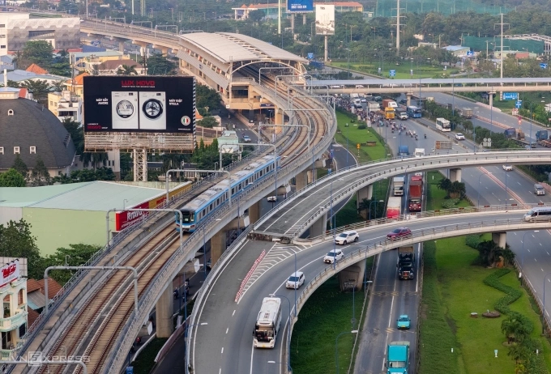

Kéo dài metro Bến Thành - Suối Tiên đến sân bay Long Thành
Chính phủ đồng ý về nguyên tắc kéo dài tuyến metro Bến Thành - Suối Tiên đến trung tâm hành chính mới tỉnh Đồng Nai và sân bay Long Thành theo lệnh khẩn cấp để rút ngắn thủ tục.
Văn phòng Chính phủ vừa thông báo kết luận của Thủ tướng Phạm Minh Chính chấp thuận đề xuất này trên cơ sở kiến nghị của UBND tỉnh Đồng Nai.
Thủ tướng giao Bộ Xây dựng, Bộ Tài chính, UBND tỉnh Đồng Nai và UBND TP HCM triển khai dự án theo đúng quy định, đồng thời yêu cầu trong quá trình thực hiện không để xảy ra tiêu cực, tham nhũng, lãng phí, kém hiệu quả.
Lãnh đạo Chính phủ cũng yêu cầu UBND TP HCM phối hợp các bộ, ngành liên quan sớm giải quyết dứt điểm các vấn đề liên quan đến nhà thầu triển khai dự án metro Bến Thành - Suối Tiên, báo cáo cấp có thẩm quyền đối với những nội dung vượt thẩm quyền.
Trước đó ngày 10/3, Phó thủ tướng Trần Hồng Hà giao UBND tỉnh Đồng Nai phối hợp Bộ Xây dựng và Bộ Tài chính đề xuất cơ chế đặc thù để triển khai dự án nối dài tuyến metro Bến Thành - Suối Tiên đến sân bay Long Thành, báo cáo Thủ tướng xem xét quyết định.
